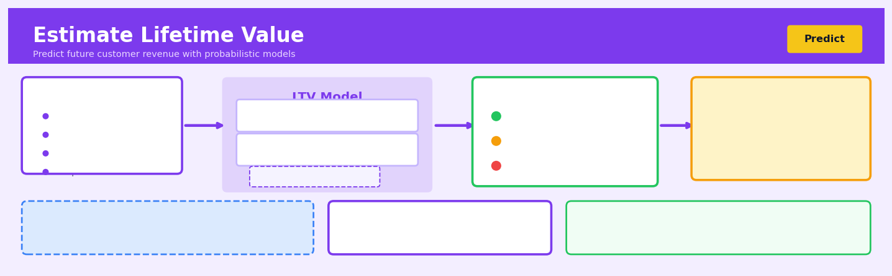

Estimate Lifetime Value#


Estimate Lifetime Value is a core transformation in the Predict workflow.
The 60-Second Version#
What it does: LTV estimates how much profit each customer will generate for your business over their entire relationship with you.
When to use it: You need to decide how much to spend acquiring or retaining customers, or you want to identify which customer segments are actually most valuable to your business.
What you get back: A dollar figure for each customer (or segment) that tells you their expected total value, letting you set acquisition budgets, prioritize retention efforts, and allocate marketing spend rationally.
At a Glance
Difficulty |
Moderate |
Typical runtime |
Minutes on 100K customers |
What you bring |
Customer transaction history with dates and values |
What you get |
Expected future value per customer or segment |
Heuristix bucket |
Predict — Machine Learning & Forecasting |
LTV is a forecast, not a guarantee—it’s only as reliable as the assumption that future customer behavior will resemble the past.
Learning Objectives#
After reading this chapter, a business user will be able to:
Identify situations where LTV estimation provides value over simpler metrics like average order value, particularly when customer retention varies significantly or acquisition costs require justification
Interpret LTV distributions and confidence intervals to distinguish between high-value customer segments and explain why point estimates alone can mislead resource allocation decisions
Decide optimal customer acquisition spending limits by comparing estimated LTV against acquisition costs, accounting for uncertainty and payback periods in capital-constrained environments
After reading this chapter, a data scientist will be able to:
Implement both cohort-based and individual-level LTV models using appropriate probability distributions for purchase timing (Pareto/NBD, BG/NBD) and monetary value (Gamma-Gamma), handling right-censored observation windows correctly
Calibrate model hyperparameters by selecting appropriate observation and prediction windows, balancing the trade-off between data recency and sample size when fitting behavioral probability distributions
Validate LTV predictions through holdout testing and calibration plots, diagnosing common failure modes including non-stationary customer behavior, population heterogeneity violations, and contractual versus non-contractual setting mismatches
Overview#
Estimate Lifetime Value (LTV) is a predictive technique that quantifies the total net profit a business expects to earn from its relationship with a customer over their entire tenure. At its core, LTV estimation combines probabilistic models of customer behaviour—specifically purchase frequency and churn—with economic models of transaction value to produce forward-looking monetary expectations. This technique belongs to the family of probabilistic customer base analysis methods, drawing heavily on survival analysis, Bayesian inference, and stochastic point processes.
When to Use This#
Use this when you need to allocate marketing budget across customer acquisition channels—LTV estimates allow you to set rational upper bounds on customer acquisition cost (CAC) by channel and segment.
Use this when you are designing a customer loyalty or retention programme—understanding which customers have high predicted future value helps prioritise intervention spend on those with the greatest upside.
Use this when you need to value a customer base for M&A due diligence—the aggregate LTV of acquired customers is a critical input to valuation models for subscription and contractual businesses.
Use this when you want to segment customers by future profitability rather than past behaviour—LTV models produce forward-looking scores that capture heterogeneity in purchase propensity and expected tenure.
Use this when you are optimising pricing or discounting strategy—understanding how price changes affect both transaction value and customer longevity requires an integrated LTV framework.
Use this when you observe non-contractual customer relationships where churn is not directly observable—probabilistic models explicitly handle the “alive or dead” uncertainty inherent in these settings.
Do NOT use this when you have purely contractual relationships with known contract end dates—simpler cohort-based or survival models are more appropriate and interpretable.
Do NOT use this when your customer base is too young to exhibit meaningful repeat purchase behaviour—the models require sufficient transaction history to estimate behavioural parameters.
Do NOT use this when the business model involves one-time purchases with no expectation of repeat behaviour—LTV is meaningless when there is no “lifetime” to model.
Do NOT use this when you lack transaction-level data including customer identifiers and timestamps—the probabilistic models require individual purchase histories.
Questions This Answers#
Customer Investment & Acquisition Strategy#
How much can we afford to spend acquiring a new customer without losing money?
Should we approve this \(2M marketing campaign targeting millennials if our average customer spends \)180 over their lifetime?
Which customer acquisition channel—paid search, social media, or partnerships—will generate the most profitable customers over the next three years?
Is it worth offering a $50 sign-up bonus to new customers if we expect them to stay for 18 months?
We’re debating between two customer segments: one that spends \(100 upfront but churns quickly, and another that spends \)30 but stays loyal—which should we prioritize?
Retention & Growth Priorities#
Should we invest in our loyalty program or focus on acquiring new customers—where will we see better ROI?
Our Premium tier customers generate 60% of revenue—if we lose 10% of them next year, what’s the actual dollar impact?
Which customers are worth saving with retention offers, and how much should we be willing to spend to keep them?
We have budget for either improving onboarding or building a win-back campaign—which will add more value over the next two years?
Portfolio & Planning Decisions#
If we’re projecting $50M in revenue next year, how much of that is coming from our existing customer base versus new acquisitions we need to make?
Our investors want to know the value of our customer base—what’s the total expected revenue from all current customers?
We’re considering expanding into enterprise clients who buy less frequently but in larger amounts—will they be more or less valuable than our SMB customers over five years?
Finance wants to forecast cash flow for the next 24 months—how much repeat revenue can we count on from current customers?
How It Works#
Imagine you’re running a neighborhood coffee shop, and you notice that Sarah comes in every Monday and Thursday, spending about \(6 each visit. Over the past year, she's been remarkably consistent. Now you're trying to decide whether to offer her a loyalty program that costs you \)50 to set up. The question isn’t just “What has Sarah spent?” but “What will Sarah be worth to me over the next few years?” You need to estimate her lifetime value: how much profit she’ll generate before she eventually stops coming, whether that’s next month or in five years.
CUSTOMER HISTORY LTV ESTIMATION PROCESS
Raw Transactions → Purchase Pattern Model
┌──────────┬────────┐ ┌─────────────────────────┐
│ Date │ Amount │ │ Frequency: 2x/week │
├──────────┼────────┤ │ Avg Value: $6 │
│ Jan 3 │ $6.50 │ ──→ │ Consistency: High │
│ Jan 6 │ $5.50 │ └─────────────────────────┘
│ Jan 10 │ $6.00 │ ↓
│ Jan 13 │ $6.50 │ Churn Probability Model
│ Jan 17 │ $5.75 │ ┌─────────────────────────┐
│ ... │ ... │ │ Month 1: 95% active │
└──────────┴────────┘ │ Month 6: 85% active │
│ Month 12: 70% active │
│ Month 24: 50% active │
└─────────────────────────┘
↓
Expected Future Value
┌─────────────────────────┐
│ Next 12 months: $520 │
│ Next 24 months: $890 │
│ Lifetime total: $1,240 │
└─────────────────────────┘
Step 1: Collect each customer’s transaction history. The technique starts by gathering all past purchases: when each customer bought something, how much they spent, and how much time passed between purchases. This creates a behavioral fingerprint for each individual.
Step 2: Model how often customers typically purchase. Using patterns from the transaction history, the algorithm estimates each customer’s underlying purchase frequency. Some customers are weekly visitors, others monthly, others sporadic. The model captures not just the average but the variability—recognizing that life is messy and purchase timing isn’t perfectly regular.
Step 3: Estimate how likely each customer is to “die” or churn. The technique analyzes gaps in purchase history to calculate the probability that any given customer has stopped being active. A customer who bought weekly for months but hasn’t returned in three months is probably gone. One who purchases quarterly and last bought two months ago is probably still active.
Step 4: Project future purchase value. For each upcoming time period, the model multiplies three things together: the probability the customer is still active, how often they’ll likely purchase, and how much they’ll typically spend. This creates a declining stream of expected revenue stretching into the future.
Step 5: Sum up the projected stream and account for costs. The algorithm adds together all future expected revenue, applies a discount rate (money today is worth more than money later), and subtracts expected costs to serve that customer. The result is a single number: the customer’s lifetime value.
The key insight: By treating customer activity as a probabilistic process rather than a deterministic one, LTV estimation gracefully handles uncertainty about who’s still engaged and generates realistic monetary expectations even with incomplete information.
The Intuition#
Imagine you own a small café. Some customers visit every morning like clockwork, others appear sporadically, and some visited once two years ago and never returned. If someone asks you “how much is a typical customer worth?”, you face an immediate problem: you don’t know which of your irregular customers have quietly defected and which are simply between visits. This uncertainty—the inability to observe when a non-contractual customer has truly “churned”—is the fundamental challenge that LTV estimation must address.
The key insight is that we can model customer behaviour as a two-stage stochastic process. First, while a customer is “alive” (still considering your business as part of their repertoire), they make purchases according to some random process—perhaps arriving on average twice a month, but with natural variation around that rate. Second, at some unpredictable moment, the customer “dies” (permanently defects) and makes no further purchases. The observed purchase history is a censored realisation of this latent process: we see transactions while the customer is alive, then silence—but that silence could mean death or simply a long inter-purchase interval.
The probabilistic approach treats each customer’s purchase rate and dropout probability as individual-level parameters drawn from population-level distributions. A customer who bought frequently for years and then stopped is probably dead; a customer who bought infrequently but purchased recently might just be between visits. By fitting the population distributions to observed aggregate behaviour, we can compute posterior probabilities of each state and, crucially, expected future purchases conditional on either outcome. This allows us to generate a principled estimate of expected lifetime value that properly accounts for both behavioural heterogeneity and the fundamental uncertainty about customer status.
The Mathematics#
Problem Setup and Notation#
We consider a non-contractual business setting where customers make repeat purchases at irregular intervals. Let customer \(i\) have made \(x_i\) transactions in a period of length \(T_i\) time units since their first purchase, with the most recent transaction occurring at time \(t_{x_i}\) (the “recency” of the customer). We observe data \(\{(x_i, t_{x_i}, T_i)\}_{i=1}^N\) for \(N\) customers.
Define the following latent quantities for each customer:
\(\lambda_i\): the transaction rate (purchases per unit time) while “alive”
\(\mu_i\): the dropout rate (probability of “dying” per unit time)
\(\tau_i\): the (unobserved) time at which the customer became inactive
The BG/NBD Model#
The Beta-Geometric/Negative Binomial Distribution (BG/NBD) model, introduced by Fader, Hardie, and Lee (2005), makes the following assumptions:
Assumption 1 (Transaction Process): While alive, a customer makes purchases according to a Poisson process with rate \(\lambda_i\). The number of transactions in a period of length \(t\) follows:
Assumption 2 (Dropout Process): After each transaction, a customer has probability \(p_i\) of becoming permanently inactive. The number of transactions before dropout follows a geometric distribution:
Assumption 3 (Heterogeneity in Transaction Rates): Transaction rates \(\lambda_i\) vary across the population according to a Gamma distribution with shape \(r\) and rate \(\alpha\):
Assumption 4 (Heterogeneity in Dropout Probability): Dropout probabilities \(p_i\) vary across the population according to a Beta distribution with parameters \(a\) and \(b\):
Assumption 5 (Independence): The transaction rate \(\lambda_i\) and dropout probability \(p_i\) are independent across customers and independent of each other.
Likelihood Function#
The likelihood of observing \((x, t_x, T)\) for a customer has two components: the customer is either still alive at time \(T\) or became inactive immediately after the transaction at time \(t_x\).
Integrating over the heterogeneity distributions, the likelihood contribution is:
where:
The term \(A_1\) represents the probability of observing the data given the customer is still alive; \(A_2\) represents the probability given the customer dropped out after their last observed transaction. The indicator \(\delta_{x>0}\) ensures we only consider dropout after at least one repeat purchase.
Parameter Estimation#
The model parameters \(\theta = (r, \alpha, a, b)\) are estimated by maximising the log-likelihood across all customers:
This optimisation is typically performed using quasi-Newton methods (e.g., L-BFGS-B) with constraints \(r, \alpha, a, b > 0\).
Probability of Being Alive#
Given fitted parameters and observed behaviour \((x, t_x, T)\), the posterior probability that a customer is still alive is:
This probability decreases as the gap between \(t_x\) and \(T\) increases (the customer hasn’t purchased recently) and increases with \(x\) (customers who purchased frequently in the past are more likely to still be active).
Expected Future Transactions#
The expected number of transactions in a future period of length \(t^*\) is:
This expression captures both the expected transaction rate (conditional on being alive) and the probability of remaining alive through the forecast horizon.
Monetary Value: The Gamma-Gamma Model#
To complete the LTV calculation, we must estimate expected transaction value. The Gamma-Gamma model assumes:
Assumption 6: Individual transaction values \(z_{ij}\) for customer \(i\) follow a Gamma distribution with customer-specific mean \(\nu_i\) and common shape parameter \(q\):
Assumption 7: Mean transaction values \(\nu_i\) vary across customers according to a Gamma distribution:
Given observed average transaction value \(\bar{z}_i\) over \(x_i\) transactions, the expected mean transaction value is:
Lifetime Value Calculation#
Combining expected future transactions with expected transaction value and applying a discount rate \(d\) per period:
For practical computation with a finite horizon \(H\):
Edge Cases and Degenerate Conditions#
Single transaction customers (\(x_i = 0\)): These customers provide limited information about transaction rate heterogeneity. The model uses population priors heavily, and \(P(\text{alive})\) depends primarily on recency relative to \(T\).
Very recent customers (\(T_i \approx 0\)): Observation periods near zero can cause numerical instability. Minimum observation period thresholds are recommended.
Perfect regularity (\(a \to \infty\)): When dropout probability heterogeneity vanishes, the model reduces to a Pareto/NBD-like structure.
Understanding the Mathematics#
Expected Customer Lifetime#
The equation: $\(\text{LT} = \frac{1}{p}\)$
Read it aloud: The expected lifetime equals one divided by the churn probability.
What each symbol means:
LT = Expected lifetime (in periods: months, years, etc.)
p = Probability of a customer churning in any given period
1 = A single time period
A concrete numerical example: Suppose 5% of your subscription customers cancel each month. That means p = 0.05.
The expected lifetime is: $\(\text{LT} = \frac{1}{0.05} = 20 \text{ months}\)$
If churn rises to 10% per month (p = 0.10), the expected lifetime drops: $\(\text{LT} = \frac{1}{0.10} = 10 \text{ months}\)$
Why this equation matters: Without knowing how long customers typically stay, you cannot estimate how much revenue they’ll generate—this is the foundation for every LTV calculation.
Basic Lifetime Value Formula#
The equation: $\(\text{LTV} = m \cdot r \cdot \frac{1}{p}\)$
Read it aloud: Lifetime value equals the margin per transaction, multiplied by the purchase frequency per period, multiplied by one divided by the churn probability.
What each symbol means:
LTV = Customer lifetime value (in dollars)
m = Average profit margin per transaction ($)
r = Average purchase frequency per period (transactions per month/year)
p = Churn probability per period
· = Multiplication operator
A concrete numerical example: A coffee shop customer generates $4 profit per visit (m = 4), visits 3 times per month (r = 3), and has a 2% monthly churn probability (p = 0.02).
This customer is worth \(600 over their lifetime. If you increase visit frequency to 4 times per month: \)\(\text{LTV} = 4 \cdot 4 \cdot \frac{1}{0.02} = 16 \cdot 50 = \$800\)$
Why this equation matters: This tells you the maximum amount you can spend acquiring a customer while remaining profitable—spend more than $600 on acquisition and you lose money.
Discounted Lifetime Value#
The equation: $\(\text{LTV}_{\text{discounted}} = m \cdot r \cdot \frac{1}{p + d}\)$
Read it aloud: Discounted lifetime value equals margin per transaction, multiplied by purchase frequency, multiplied by one divided by the sum of churn probability and discount rate.
What each symbol means:
LTV_discounted = Present value of future customer profits ($)
m = Average profit margin per transaction ($)
r = Purchase frequency per period
p = Churn probability per period
d = Discount rate per period (reflecting time value of money)
A concrete numerical example: Using the same coffee shop customer (m = $4, r = 3, p = 0.02) but adding a 1% monthly discount rate (d = 0.01):
Without discounting, this customer was worth \(600. With discounting, they're worth \)400—because future profits are worth less than immediate profits.
Why this equation matters: Ignoring the time value of money overstates customer value and leads to overspending on acquisition, especially for businesses with long customer lifetimes or high capital costs.
Probability of Being Alive at Time t#
The equation: $\(P(\text{alive at time } t) = (1-p)^t\)$
Read it aloud: The probability a customer is still active at time t equals one minus the churn probability, raised to the power of t.
What each symbol means:
P(alive at time t) = Probability customer hasn’t churned by period t
1 - p = Probability of surviving (not churning) in any single period
t = Number of periods elapsed
^t = Raised to the power t (compounding survival across periods)
A concrete numerical example: With 5% monthly churn (p = 0.05), the probability a customer remains active after 12 months is:
About 54% of customers survive one year. After 24 months: $\(P(\text{alive at } t=24) = (0.95)^{24} = 0.292\)$
Only 29% remain after two years.
Why this equation matters: This reveals how your customer base erodes over time and helps you calculate when cohorts become unprofitable—critical for forecasting revenue and setting retention targets.
The Big Picture#
The mathematics of lifetime value is fundamentally trying to solve one problem: convert uncertain future customer behavior into a concrete dollar figure today. We use these specific equations because customer retention follows probabilistic decay—customers don’t all leave at once, they gradually churn period by period, creating a survival curve that simple averages cannot capture. The discounting component acknowledges financial reality: a dollar next year is worth less than a dollar today. These formulas combine into a powerful prediction engine that transforms three observable metrics (margin, frequency, churn) into forward-looking valuations that drive acquisition budgets, retention investments, and strategic planning. At its heart, the math asks: if this customer keeps behaving like they have been, what’s the present value of all their future purchases before they eventually leave?
Python Implementation#
import numpy as np
import pandas as pd
from scipy.optimize import minimize
from scipy.special import gammaln, betaln
import warnings
# ============================================================
# Synthetic Data Generation
# ============================================================
def generate_bgnbd_data(n_customers=1000, T=52, r=0.25, alpha=4.0, a=0.8, b=2.5, seed=42):
"""
Generate synthetic customer transaction data from a BG/NBD process.
Parameters:
-----------
n_customers : int - number of customers to simulate
T : float - observation period length (e.g., weeks)
r, alpha : float - Gamma distribution parameters for transaction rate
a, b : float - Beta distribution parameters for dropout probability
seed : int - random seed for reproducibility
Returns:
--------
DataFrame with columns: customer_id, frequency, recency, T, monetary_value
"""
np.random.seed(seed)
records = []
for i in range(n_customers):
# Draw individual parameters from population distributions
lam = np.random.gamma(r, 1/alpha) # transaction rate
p = np.random.beta(a, b) # dropout probability
# Simulate customer lifetime
t = 0
transactions = []
alive = True
while alive and t < T:
# Time to next transaction (exponential inter-arrival)
inter_arrival = np.random.exponential(1/lam) if lam > 0 else np.inf
t += inter_arrival
if t < T:
transactions.append(t)
# Check if customer drops out after this transaction
if np.random.random() < p:
alive = False
# Calculate RFM metrics
frequency = len(transactions) - 1 if len(transactions) > 0 else 0 # repeat purchases
recency = transactions[-1] if len(transactions) > 0 else 0
# Generate monetary values (Gamma-Gamma assumption)
if len(transactions) > 0:
nu_i = np.random.gamma(5, 10) # individual mean transaction value
values = np.random.gamma(3, nu_i/3, size=len(transactions))
monetary_value = np.mean(values)
else:
monetary_value = 0
records.append({
'customer_id': i,
'frequency': frequency,
'recency': recency,
'T': T,
'monetary_value': monetary_value,
'n_transactions': len(transactions)
})
return pd.DataFrame(records)
# ============================================================
# BG/NBD Model Implementation
# ============================================================
class BGNBDModel:
"""
Beta-Geometric/Negative Binomial Distribution model for
customer lifetime value estimation.
"""
def __init__(self):
self.params = None
self.fitted = False
def _log_likelihood_individual(self, params, x, tx, T):
"""
Compute log-likelihood for a single customer.
Parameters:
-----------
params : array-like - [r, alpha, a, b]
x : float - frequency (number of repeat purchases)
tx : float - recency (time of last purchase)
T : float - total observation period
"""
r, alpha, a, b = params
# Numerical stability checks
if r <= 0 or alpha <= 0 or a <= 0 or b <= 0:
return -np.inf
# Log of A1 term (customer still alive)
log_A1 = (betaln(a, b + x) - betaln(a, b) +
gammaln(r + x) - gammaln(r) +
r * np.log(alpha) - (r + x) * np.log(alpha + T))
# Log of A2 term (customer dropped out after last transaction)
if x > 0:
log_A2 = (betaln(a + 1, b + x - 1) - betaln(a, b) +
gammaln(r + x) - gammaln(r) +
r * np.log(alpha) - (r + x) * np.log(alpha + tx))
else:
log_A2 = -np.inf
# Log-sum-exp trick for numerical stability
max_val = max(log_A1, log_A2)
if np.isinf(max_val):
return log_A1
return max_val + np.log(np.exp(log_A1 - max_val) + np.exp(log_A2 - max_val))
def _negative_log_likelihood(self, params, data):
"""Total negative log-likelihood across all customers."""
total_ll = 0
for _, row in data.iterrows():
ll = self._log_likelihood_individual(
params
## Visualisations


## Using This in Heuristix
### What Data You Need
The Estimate Lifetime Value node expects customer transaction data—one row per purchase. You'll need at minimum:
- **Customer ID** (categorical): A unique identifier for each customer
- **Transaction Date** (date/datetime): When each purchase occurred
- **Transaction Value** (numeric): The revenue or profit from each transaction
Here's what your input data should look like:
| customer_id | transaction_date | transaction_value |
|-------------|------------------|-------------------|
| C001 | 2023-01-15 | 45.99 |
| C001 | 2023-03-22 | 32.50 |
| C002 | 2023-01-08 | 128.00 |
| C002 | 2023-02-14 | 75.25 |
The node will aggregate this transaction-level data internally to build customer-level models.
### Configuration Parameters
| Parameter | What It Controls | Default | When to Change It |
|-----------|-----------------|---------|-------------------|
| **Observation Period (months)** | How far back in history to analyze customer behavior | 12 | Use longer periods (18-24) for infrequent purchases like furniture; shorter (6-9) for fast-moving consumer goods |
| **Prediction Horizon (months)** | How far into the future to predict LTV | 12 | Match to your strategic planning cycle or average customer lifecycle |
| **Discount Rate (%)** | Annual rate to discount future cash flows to present value | 10% | Use your company's weighted average cost of capital (WACC) if known |
| **Penalizer Coefficient** | Controls model regularization to prevent overfitting | 0.001 | Increase to 0.01 if you have fewer than 500 customers; decrease to 0.0001 for very large datasets (100k+ customers) |
| **Model Type** | BG/NBD (frequency) or Gamma-Gamma (monetary value) | Auto (both) | Usually keep as Auto; select specific models only when debugging or comparing approaches |
### What You'll Get as Output
The node produces a customer-level output table with these new columns:
- **predicted_purchases**: Expected number of future transactions during your prediction horizon
- **probability_alive**: Likelihood (0-1) that the customer is still active
- **predicted_ltv**: The headline metric—expected total profit from this customer
- **clv_percentile**: Where this customer ranks (helps segment high-value customers)
You'll also see visualizations including:
- **Frequency/Recency Matrix**: Shows actual vs. predicted purchase patterns to validate model fit
- **LTV Distribution Histogram**: Reveals whether you have a few whales or many minnows
- **Calibration Plot**: Compares predicted to actual behavior on holdout data
### Quick Start
1. **Connect your transaction data** to the node input, ensuring you have customer ID, date, and value columns
2. **Map your columns** in the node configuration panel to the required fields
3. **Set your observation period** to match your available history (12 months is a good starting point)
4. **Keep default parameters** for your first run—they work well for most retail and SaaS businesses
5. **Run the node** and examine the calibration plot first; if predictions are systematically off, adjust the penalizer
6. **Export the customer-level LTV scores** for use in segmentation or campaign targeting
### Connecting Downstream
This node pairs naturally with:
- **Segment Customers**: Use `predicted_ltv` and `probability_alive` as segmentation features to create VIP tiers
- **Predict Churn**: The `probability_alive` score feeds directly into churn risk models
- **Optimize Marketing Spend**: Compare predicted LTV against customer acquisition cost (CAC) to set bid caps
- **Build Dashboard**: Visualize LTV trends over customer cohorts
### Pro Tips
**Start with cohort analysis first.** Before estimating LTV, run a basic cohort retention analysis to understand if you have enough repeat purchase data. LTV models need customers who've had the opportunity to make multiple purchases.
**Mind your observation window.** If you set it too short, you'll underestimate LTV by missing late-blooming customers. Too long, and you'll include outdated behavioral patterns. The sweet spot is typically 3-5x your median purchase frequency.
**Use profit, not revenue.** If your transaction values include revenue, subtract costs to get profit margins. A $100 revenue customer with 20% margins has an actual value of $20.
**Check model assumptions with the diagnostic plots.** If your frequency/recency matrix shows poor fit (predictions far from actuals), your customer behavior might not match the BG/NBD assumptions—consider segmenting before modeling.
**Combine with acquisition source.** Join your LTV predictions back to acquisition channel data to calculate channel-specific LTV/CAC ratios—this transforms LTV from descriptive to decisively actionable.
## Config Recipes
### Recipe 1: Quick Exploration
**When to use:** Initial assessment of a new dataset with unknown data quality, when you need directional LTV estimates within minutes to decide if deeper modeling is warranted.
**Settings:**
| Parameter | Value | Why |
|-----------|-------|-----|
| `model_type` | `"bg/nbd"` | Fastest converging model with fewest assumptions |
| `penalizer_coef` | `0.01` | Heavy regularization prevents overfitting on limited exploration |
| `sample_size` | `10000` | Representative sample keeps computation under 2 minutes |
| `frequency_cap` | `100` | Removes outliers that distort quick estimates |
| `validation_split` | `0` | Skip validation to maximize speed |
**What you get:** Rough LTV magnitudes and customer segmentation boundaries accurate to within ±30%.
**Trade-off:** No confidence intervals or holdout validation means you cannot trust these estimates for financial forecasting.
### Recipe 2: Production-Grade Rigor
**When to use:** Building LTV predictions that will drive budget allocation, pricing decisions, or be reported to executives requiring defensible methodology.
**Settings:**
| Parameter | Value | Why |
|-----------|-------|-----|
| `model_type` | `"pareto/nbd"` | Handles heterogeneity better than BG/NBD for diverse customer bases |
| `penalizer_coef` | `0.0` | Let model complexity emerge from data with full degrees of freedom |
| `mcmc_samples` | `5000` | Sufficient posterior samples for stable credible intervals |
| `warmup_samples` | `2000` | Proper MCMC burn-in for convergence |
| `validation_method` | `"time_series_split"` | Respects temporal structure in customer data |
| `confidence_level` | `0.90` | Conservative intervals for financial planning |
| `recency_weighting` | `True` | Recent behavior predicts future better than distant past |
**What you get:** Bayesian posterior distributions with credible intervals suitable for risk-adjusted decision-making.
**Trade-off:** 20-100x longer computation time; requires distributional assumptions to be verified.
### Recipe 3: High-Churn Subscription Business
**When to use:** SaaS, streaming services, or subscription boxes where monthly churn exceeds 5% and most customers never make a second purchase.
**Settings:**
| Parameter | Value | Why |
|-----------|-------|-----|
| `model_type` | `"beta_geo"` | Explicitly models dropout probability independent of purchase rate |
| `observation_period_days` | `90` | Shorter window reflects rapid churn dynamics |
| `discount_rate` | `0.15` | Monthly ~1.2% rate accounts for high time-value in volatile base |
| `frequency_threshold` | `1` | Include one-time users; they dominate this business model |
| `churn_hazard_model` | `"weibull"` | Captures early high-risk period in subscription lifecycle |
**What you get:** Accurate early-lifecycle predictions that identify at-risk customers within their first month.
**Trade-off:** Model assumes purchase and churn are independent processes, which breaks down for usage-based pricing.
### Recipe 4: Donor Retention for Nonprofits
**When to use:** Charitable organizations modeling donor lifetime value where transactions are irregular, voluntary, and heavily seasonal (year-end giving).
**Settings:**
| Parameter | Value | Why |
|-----------|-------|-----|
| `model_type` | `"gamma_gamma"` | Monetary value varies independently of donation frequency |
| `seasonal_period` | `365` | Annual tax-season pattern dominates donor behavior |
| `observation_period_days` | `1095` | Three-year window captures multi-year sporadic donors |
| `discount_rate` | `0.03` | Lower rate reflects patient capital in nonprofit context |
| `transaction_value_log_transform` | `True` | Major gifts create extreme right skew in donation amounts |
**What you get:** Separate predictions for "will they give again?" and "how much?" enabling targeted stewardship.
**Trade-off:** Requires sufficient transaction history; new donor programs need 2+ years of data.
## Business Applications
**Financial Services**
A digital-only neobank with 450,000 customers faces intense competition and limited marketing budgets. Customer acquisition costs £120, but profitability varies wildly—some customers churn within months while others maintain relationships for years. By implementing LTV estimation across their customer base, the bank segments acquisition spend toward high-LTV prospects (young professionals opening their first savings account, freelancers needing business banking) and reduces spend on low-LTV segments (rate-chasers who switch banks every promotional period). This reallocation delivered £2.8M in improved marketing ROI within the first year, while increasing the proportion of customers retained beyond 24 months from 34% to 47%.
**Retail & E-Commerce**
An online fashion retailer with 8M annual visitors struggles to decide which cart abandoners deserve expensive retargeting ads versus simple email reminders. Building separate LTV models for first-time visitors versus returning customers, they discover that abandoned carts from customers who previously purchased twice have an average LTV of £340, while first-time abandoners average just £45. By reserving premium retargeting (Facebook, Instagram, display) exclusively for high-LTV abandoners and using basic email for the rest, they cut retargeting spend by £180,000 quarterly while maintaining 92% of previous recovery revenue.
**SaaS & Technology**
A B2B analytics platform charging £299-£2,400 monthly needs to prioritize which churning customers receive white-glove retention intervention from their limited customer success team. Estimating LTV using product usage patterns, contract value, team size, and integration depth, they identify that enterprise customers with API integrations have 8.2x higher LTV than basic dashboard users. Focusing retention efforts on the top 15% LTV accounts at risk, they reduced enterprise churn from 18% to 11% annually, preserving £4.1M in annual recurring revenue with the same headcount.
**Telecommunications**
A regional mobile carrier with 2.3M subscribers faces commoditized pricing and frequent competitor poaching. Rather than offering retention discounts reactively when customers call to cancel, they deploy LTV models to predict which high-value customers are likely to churn in the next 90 days. Customers with LTV above £1,200 and elevated churn probability receive proactive upgrade offers and loyalty benefits before they contact competitors. This shift from reactive to predictive retention decreased high-value customer churn by 23% and reduced discount costs by £6.7M annually, since preemptive offers are smaller than panic-retention deals.
**Healthcare**
A private dental practice network with 34 locations wants to understand which patient acquisition channels produce long-term value versus one-time cosmetic procedures. LTV analysis reveals that patients acquired through GP referrals have average lifetime values of £3,400 (regular hygiene, family dentistry, occasional restorative work), while Instagram-driven cosmetic patients average £890 (single whitening or veneer procedure, rarely return). The practice redirects marketing spend toward GP relationship building and family-oriented content, lifting new patient LTV by 41% year-over-year.
**Insurance**
A commercial insurance broker writes policies across property, liability, and cyber coverage but lacks clarity on cross-selling potential. LTV modeling incorporating policy type, industry vertical, company size, and claims history identifies that technology companies starting with cyber insurance have 5.7x higher total LTV than those starting with basic property coverage, driven by rapid expansion and policy additions. Sales teams now prioritize cyber insurance as the entry product for tech prospects, increasing average customer value from £8,200 to £14,100 over three years.
**Manufacturing**
An industrial equipment manufacturer selling CNC machines discovers through LTV analysis that customers purchasing extended service contracts generate 62% of their profit not from the initial machine sale but from parts, maintenance, and upgrades over a 12-year ownership period. They restructure their compensation model to reward sales representatives for contract attachment rates rather than just unit volume, increasing service contract adoption from 34% to 71% and adding £3.9M in high-margin recurring revenue.
**Public Sector**
A metropolitan library system uses LTV estimation to identify which new cardholders will become active long-term users versus one-time registrations. Cardholders attending at least one program in their first 60 days show 4.3x higher engagement LTV (measured in visits, borrows, and program attendance). The system now automatically invites new members to orientation events, increasing long-term active users by 28% and justifying continued public funding through demonstrated community engagement.
## Worked Example
Sarah Chen, lead analyst at Brewpoint Coffee, was sitting across from Marcus, the VP of Marketing, when he asked the question that would define her next two weeks: "We're spending $45 per customer on acquisition right now. Is that sustainable, or are we lighting money on fire?"
Brewpoint had grown from three locations to twenty-seven in just four years, and their newly launched subscription service was showing promise—but the unit economics weren't clear. Marcus needed to know which customer segments were actually profitable over the long term before committing to an aggressive Q4 acquisition campaign. The decision would determine whether they'd invest another $2.3 million in digital advertising or pull back entirely.
Sarah started by pulling together eighteen months of transaction data from their loyalty database. The dataset wasn't perfect—it never is. Some customers had signed up but never made a purchase. Others had multiple accounts (she could tell from matching email domains and phone numbers). She spent a morning deduplicating records and standardizing the subscription flags before settling on a clean cohort of 8,247 customers who had joined between January 2022 and June 2023.
Her final dataset looked like this:
| customer_id | first_purchase | last_purchase | total_transactions | total_revenue | subscription_active |
|-------------|----------------|---------------|-------------------|---------------|---------------------|
| C00234 | 2022-01-15 | 2023-09-12 | 23 | 487.50 | TRUE |
| C00891 | 2022-03-22 | 2022-04-10 | 2 | 31.00 | FALSE |
| C01456 | 2022-07-08 | 2023-10-01 | 47 | 1,203.25 | TRUE |
| C02103 | 2023-01-14 | 2023-02-28 | 4 | 68.00 | FALSE |
| C02784 | 2023-04-05 | 2023-10-15 | 12 | 294.80 | TRUE |
Sarah configured the LTV estimation using a BG/NBD (Beta-Geometric/Negative Binomial Distribution) model for purchase probability paired with a Gamma-Gamma model for transaction value. She chose a 24-month prediction horizon—long enough to capture the full customer lifecycle but short enough to be actionable for this year's budget planning. She set the discount rate to 8% to reflect Brewpoint's cost of capital, and she stratified the analysis by subscription status because she suspected (correctly, as it turned out) that those two groups would behave very differently.
The model took about four minutes to run. When the results came back, Sarah immediately saw the pattern Marcus needed to understand:
| Segment | Avg LTV (24mo) | Predicted Purchases | Churn Probability (12mo) | CAC Payback (months) |
|---------|----------------|---------------------|--------------------------|----------------------|
| Subscription Active | $847.30 | 38.2 | 0.18 | 2.1 |
| Non-Subscription | $124.60 | 4.7 | 0.64 | 14.3 |
| Overall | $312.40 | 12.8 | 0.51 | 7.8 |
The insight hit her immediately: Brewpoint wasn't running one business—they were running two. Subscription customers had an LTV nearly seven times higher than casual buyers, with dramatically lower churn and a payback period under three months. The $45 acquisition cost wasn't the problem. The problem was that they were spending the same amount to acquire both types of customers, when only one segment justified that investment.
Sarah pulled together a quick Python script to validate theSegRFM segmentation that would inform targeting:
```python
import pandas as pd
from lifetimes import BetaGeoFitter, GammaGammaFitter
from lifetimes.utils import summary_data_from_transaction_data
# Load transaction history
df = pd.read_csv('brewpoint_transactions.csv', parse_dates=['date'])
# Create RFM summary (recency, frequency, monetary value)
rfm = summary_data_from_transaction_data(
df, 'customer_id', 'date', 'revenue',
observation_period_end='2023-10-01'
)
# Fit purchase probability model
bgf = BetaGeoFitter(penalizer_coef=0.01)
bgf.fit(rfm['frequency'], rfm['recency'], rfm['T'])
# Fit transaction value model
returning_customers = rfm[rfm['frequency'] > 0]
ggf = GammaGammaFitter(penalizer_coef=0.01)
ggf.fit(returning_customers['frequency'],
returning_customers['monetary_value'])
# Predict 24-month LTV
rfm['predicted_ltv_24mo'] = ggf.customer_lifetime_value(
bgf, rfm['frequency'], rfm['recency'], rfm['T'],
monetary_value=rfm['monetary_value'],
time=24, discount_rate=0.08/12
)
In the following week’s executive meeting, Sarah presented a revised acquisition strategy: concentrate paid advertising exclusively on subscription sign-ups, where the LTV justified premium spend up to $150 per customer. For casual traffic, shift to lower-cost awareness channels. Marcus approved the reallocation immediately.
By February, the results were clear: subscription acquisition cost had risen to \(67, but with an LTV of \)847, the unit economics were dramatically better than the previous blended approach. Total customer value had increased by 34% while total acquisition spend decreased by 11%.
If Sarah were doing this again, she’d spend more time on the cohort definition—customers who joined in January 2022 had fundamentally different maturity curves than those from June 2023, and blending them might have obscured important seasonal patterns. She’d also build in monthly LTV re-estimation rather than treating it as a one-time analysis, since customer behavior was clearly evolving as the subscription product matured.
Interpreting Your Results#
You’ve just run your LTV model and you’re looking at a spreadsheet full of customer-level predictions, summary statistics, and diagnostic charts. Let’s decode what you’re actually seeing.
Customer-Level LTV Predictions#
Plain-English meaning: Each customer in your dataset now has a predicted monetary value—the total profit you expect them to generate before they churn. A customer with an LTV of \(450 is someone your model believes will contribute \)450 in net profit across all future transactions. This isn’t revenue; it’s profit after costs.
Concrete benchmarks:
Below 1x CAC (Customer Acquisition Cost): This customer segment is unprofitable. If you spent \(100 to acquire them and their LTV is \)75, you’re losing money.
1x–3x CAC: Break-even to marginally profitable. Industry standard is to target at least 3:1 LTV:CAC ratio.
Above 3x CAC: Healthy unit economics. You’re making sustainable profit.
Above 5x CAC: Excellent. These are your high-value segments worth investing in.
Red flags:
LTV predictions of $0 or near-zero for large customer segments: Your model thinks these people will never buy again. Check if they’re recently acquired customers with insufficient history.
Extreme outliers (LTV 10x higher than median): Often indicates data errors—returned transactions not properly recorded, duplicate orders, or B2B customers mixed with B2C.
Negative LTV values: Impossible by definition. Signals data quality issues with costs or returns.
Probability of Being Alive (P-alive)#
Plain-English meaning: For each customer, this is the model’s confidence that they’re still an active customer (haven’t churned). A P-alive of 0.15 means there’s only a 15% chance this person will ever purchase again; 0.85 means they’re very likely still engaged.
Concrete benchmarks:
Below 0.20: Effectively churned. Don’t waste retention budget here.
0.20–0.50: At-risk. Prime candidates for win-back campaigns.
0.50–0.80: Active but monitor closely.
Above 0.80: Healthy, engaged customers.
Red flags: If more than 40% of your customer base has P-alive below 0.30, you have a serious retention crisis. If newly acquired customers (first 30 days) show P-alive below 0.70, your onboarding is failing.
Expected Purchases in Next Period#
Plain-English meaning: How many transactions the model predicts this customer will make in the specified timeframe (usually next 12 months). This combines purchase frequency patterns with churn probability.
Reading outputs together: Compare a customer with LTV=\(500, P-alive=0.9, Expected Purchases=8 versus LTV=\)500, P-alive=0.4, Expected Purchases=2. The first is a loyal frequent buyer; the second is a nearly-churned customer whose few remaining purchases happen to be high-value. Your marketing strategy for each should be completely different.
Model Validation Metrics#
Your output should include holdout set performance metrics like MAE (Mean Absolute Error) or RMSE on actual vs predicted spend.
Concrete benchmarks:
MAE < 20% of mean LTV: Model is performing well.
MAE 20–35% of mean LTV: Acceptable for most business decisions.
MAE > 35% of mean LTV: Predictions are too noisy to base financial planning on.
Red flags: If your model performs well on average but terribly on high-value segments (top 10% by actual spend), you’re going to make expensive mistakes with your best customers.
Sanity Check Checklist#
Before trusting any LTV output:
Historical alignment check: Do the model’s predictions for the calibration period roughly match what actually happened? If predicted revenue was \(1M but actual was \)1.5M, something’s wrong.
Segment plausibility: Sort customers by LTV decile. Do the top 10% characteristics match your intuition about best customers? If random patterns emerge, investigate.
Cohort consistency: Compare predicted LTV for customers acquired in different months. Wild swings month-to-month (barring actual business changes) suggest model instability.
Zero-purchase customers: What % have zero predicted future purchases? If it’s above 30%, examine your data recency and churn assumptions.
Revenue reconciliation: Multiply average predicted purchases by average order value by number of customers. Does this roughly match your sales forecast? A 2x difference either way is a red flag.
Good Enough to Act On?#
Your LTV predictions are actionable when: (1) MAE is below 30% of mean LTV, (2) top and bottom quintiles show clearly different behavioral patterns, and (3) the sanity checks above all pass. You don’t need perfection—you need relative accuracy to make better decisions than “treat all customers the same.” If you can confidently identify your top 20% and bottom 30%, start there.
Decision Guidance#
What This Result Is Telling You#
Your LTV estimate reveals how much profit a customer will generate over their entire relationship with your business, after accounting for the costs of serving them. This is fundamentally a forecast about future behavior: which customers will return, how often they’ll purchase, how much they’ll spend, and when they’ll eventually stop buying from you. When you see a customer with an LTV of \(2,400, you're looking at an expectation—not a guarantee—that this customer's future purchases will contribute \)2,400 in net profit before they churn.
This number becomes actionable when compared against your Customer Acquisition Cost (CAC). If your average CAC is \(300 and your median LTV is \)900, you have a healthy 3:1 ratio that suggests sustainable unit economics. But LTV isn’t just about validating your current business model—it’s a prioritization tool. Customers with LTV estimates in your top quartile deserve different treatment than those in the bottom quartile. The goal is to spend more to acquire and retain high-LTV customers while avoiding over-investment in customers who will never generate meaningful returns.
The uncertainty around each LTV estimate matters as much as the point estimate itself. A customer with an estimated LTV of \(1,000 ± \)100 (tight confidence interval) represents a much safer investment than one with \(1,000 ± \)800 (wide confidence interval). The latter requires more caution in acquisition spending and retention decisions because their actual value could range from barely profitable to highly valuable.
Decision Points#
If you see this… |
It means… |
Recommended action |
Who acts on this |
|---|---|---|---|
LTV/CAC ratio below 1.5:1 for a customer segment |
You’re spending almost as much to acquire customers as they’ll ever return in profit |
Pause acquisition campaigns for this segment; investigate whether product changes or retention improvements could increase LTV before resuming spend |
CMO, Growth Lead |
Top 20% of customers have LTV 5x higher than median |
Your value distribution is highly concentrated |
Create VIP retention programs, dedicated support tiers, and lookalike acquisition audiences modeled on high-LTV customers |
Head of Customer Success, VP Marketing |
LTV estimates have confidence intervals wider than ±40% of point estimate |
Your model has high uncertainty due to insufficient data or high behavioral variance |
Treat these as directional only; don’t use for individual-level decisions like credit limits or personalized discounts until more data accumulates |
Data Science Lead, Finance |
6-month cohort LTV tracking 25%+ below predicted LTV at time of acquisition |
Your model is systematically overestimating value, possibly due to changing customer behavior or market conditions |
Recalibrate model immediately and reduce acquisition spend until new predictions validate |
CFO, Head of Analytics |
New acquisition channel shows LTV 30%+ higher than existing channels |
You’ve found a source of higher-quality customers with better retention or spending patterns |
Scale investment in this channel while monitoring whether quality holds at volume; use these customers as training data to improve targeting in other channels |
VP Growth, Performance Marketing Lead |
When to Proceed vs. Investigate Further#
Proceed with confidence when:
LTV estimates are based on at least 12 months of observed customer behavior
Model validation shows predicted vs. actual LTV within ±15% for holdout cohorts
At least 30% of customers in your dataset have reached natural churn, providing complete lifetime observations
Confidence intervals are within ±30% of point estimates for segments you’re making decisions about
Proceed with caution when:
You’re forecasting LTV for customer segments that differ demographically or behaviorally from your training data by more than 20%
Recent cohorts (last 3 months) show purchase patterns deviating more than 15% from historical averages
You’re in a seasonal business and haven’t observed customers through at least two complete seasonal cycles
Investigate before acting when:
Model residuals show systematic bias for specific customer segments (over/under-predicting by more than 25%)
Your business model, pricing, or product offering changed significantly in the past 6 months
Churn rates have increased or decreased by more than 20% compared to historical baseline
Do not use these results yet when:
Less than 20% of customers in your dataset have experienced natural churn (most are still active with unknown remaining lifetime)
Your business has existed for less than one typical customer lifecycle
Validation cohorts show prediction errors exceeding ±30% of actual observed values
The Cost of Getting This Wrong#
Overestimating LTV leads to aggressive acquisition spending that appears profitable in the short term but slowly bleeds the company dry. Marketing teams celebrate efficient CAC ratios while finance watches cash reserves decline as the promised customer value never materializes. A subscription business that believes customers will stay for 24 months when they actually churn at 14 months will overspend on acquisition by 70%, discovering the error only when cohort payback periods stretch far beyond projections and the fundraising environment turns cold. Underestimating LTV is equally damaging: growth teams artificially constrain spending on acquisition channels that would actually be profitable, ceding market share to competitors willing to invest based on more accurate forecasts. Meanwhile, product and retention teams receive inadequate investment because leadership doesn’t recognize the true value at stake, creating a self-fulfilling prophecy where customers leave because the business underfunds the experience that would keep them engaged.
Common Pitfalls#
The Immortal Customer Assumption
Here’s what happened: A junior analyst at a subscription box company built their first LTV model using historical transaction data. They calculated average order value (\(45), average purchase frequency (8 times per year), and projected this forward over a 5-year horizon. The model predicted an LTV of \)1,800 per customer. They presented this to leadership, who greenlit an aggressive $400 CAC strategy. Six months later, the unit economics were underwater—actual customer lifespans averaged 14 months, not 60.
Why it happens: The seductive simplicity of “revenue per period × number of periods” feels mathematically sound. Without explicitly modeling churn, analysts unconsciously assume customers stay forever, or arbitrarily pick a time horizon that feels reasonable.
How to detect it: Your LTV projections show no decay curve. If you plot projected revenue by cohort month and see a flat line or linear growth rather than exponential decay, you’ve ignored churn. Check if your model includes a survival function—if it doesn’t, you’re making this mistake.
The fix: Always incorporate an explicit churn probability model, whether that’s exponential decay for contractual settings or a buy-till-you-die model like BG/NBD for non-contractual businesses.
The Cohort Maturity Trap
Here’s what happened: An e-commerce director compared LTV across acquisition channels using cohorts from the past three months. Email campaigns showed \(180 LTV while paid social showed \)95. They slashed the paid social budget. Nine months later, a proper analysis revealed paid social customers had longer purchase cycles but higher retention—their true LTV was $240.
Why it happens: Recent cohorts haven’t had time to exhibit their full behavioral patterns. Fast early purchases create false signals of high value, while slow-burn customers appear worthless before they’ve matured.
How to detect it: Check the age of your youngest cohort. If you’re making decisions on cohorts younger than your median customer lifespan, you’re guessing. Look for “cohort completion rates”—if less than 50% of customers in a cohort have churned, your LTV estimate is premature.
The fix: Only compare fully mature cohorts, or use probabilistic models that explicitly account for censored data and project forward with quantified uncertainty.
The Average Customer Fallacy
Here’s what happened: A SaaS company calculated their average LTV at \(2,400 and set acquisition budgets accordingly. A business analyst later segmented by plan tier and discovered enterprise customers had \)18,000 LTV while self-serve had \(600 LTV. The blended CAC of \)1,200 was profitable on paper but actually meant they were losing money on 80% of customers while dramatically underspending on the valuable 20%.
Why it happens: Averages compress multimodal distributions into a single misleading number. When customer populations have fundamentally different behaviors, the mean represents nobody.
How to detect it: Plot the distribution of individual customer LTVs. If you see multiple peaks, long tails, or a coefficient of variation above 1.0, your average is hiding critical segments. Calculate what percentage of customers fall within ±25% of your reported average—if it’s below 60%, the average is fiction.
The fix: Segment before calculating LTV, not after. Build separate models for distinct customer types, or use mixture models that explicitly capture population heterogeneity.
The Hockey Stick Hallucination
Here’s what happened: An experienced consultant building a financial model for a marketplace startup projected LTV would increase 40% year-over-year due to “network effects” and “product improvements.” The model showed beautiful exponential growth. Three years in, actual LTV had remained flat—new customers behaved identically to old ones.
Why it happens: Pressure to tell growth stories leads to embedding optimistic assumptions about future improvements into baseline projections. The LTV calculation becomes a wishful business case rather than a data-grounded estimate.
How to detect it: If your forward-looking LTV projections are higher than historical measurements without a specific, funded initiative to drive that change, you’re storytelling. Check if LTV growth assumptions are tied to concrete retention or monetization programs with success metrics, or just vague “optimization.”
The fix: Report LTV based on current observed behavior as your baseline. Create separate scenario models for improvement cases, clearly labeled as conditional on specific interventions.
The Discount Rate Disappearing Act
Here’s what happened: A pricing analyst calculated 3-year LTV for a B2B software company and reported $12,000 per customer. Finance used this for valuation models that applied their own 15% discount rate to already-undiscounted cash flows, effectively double-counting time value and undervaluing the business by millions.
Why it happens: LTV discussions often omit whether figures are nominal or present value. Different stakeholders apply different discount rates without alignment, or skip discounting entirely because “our retention is so good it doesn’t matter.”
How to detect it: Ask “is this number discounted?” If the answer is uncertain or inconsistent across teams, you have this problem. For subscription businesses with 85%+ retention, compare discounted versus undiscounted 5-year LTV—if the difference exceeds 30%, the discount rate meaningfully changes decisions.
The fix: Always specify whether LTV is present value or nominal, state the discount rate explicitly, and align with finance on the appropriate rate before any analysis begins.
The Negative Margin Blindness
Here’s what happened: A retail analytics team calculated LTV using gross revenue projections of \(800 per customer. Marketing celebrated when CAC dropped to \)600. Operations later revealed that contribution margin after COGS and fulfillment was only 35%, making true profit-based LTV just $280—less than half the acquisition cost.
Why it happens: Revenue is more visible and emotionally satisfying than profit. Building LTV models from top-line numbers is easier than incorporating cost structures, especially when margin data lives in different systems.
How to detect it: Check what your LTV numerator represents. If it’s revenue, not contribution margin, you’re measuring the wrong thing. Calculate your actual LTV:CAC ratio using profit—if it’s below 1.0, you’re destroying value with every customer.
The fix: Always build LTV using contribution margin dollars, not revenue. Include variable costs directly attributable to serving that customer over time.
The Survivorship Bias Shortcut
Here’s what happened: A mobile app company calculated LTV using only customers who made it past their first week, reasoning that “churned users aren’t real customers anyway.” Their model showed robust $45 LTV. When applied to forecast total cohort value including Day 1 dropoffs, projections were 300% too high.
Why it happens: Working with engaged users feels more relevant and produces cleaner data. Early churners create messy zeros that complicate models, so analysts unconsciously filter them out.
How to detect it: Compare the sample size in your LTV calculation to your total customer acquisition. If you’ve excluded more than 5% without explicit justification, check what you filtered. If early-tenure customers are missing, you have survivorship bias.
The fix: Include all acquired customers from time zero. Model early churn explicitly rather than preprocessing it away—those failures are part of the true customer relationship economics.
Common Misconceptions#
“LTV is just average revenue per customer multiplied by average lifespan”
Why people believe this: This formula appears in business school textbooks and countless blog posts. It’s appealingly simple and can be calculated with basic SQL queries. The logic seems sound: if customers spend \(50 on average and stay for 24 months, surely their lifetime value is \)1,200.
The truth: This approach fatally confuses population averages with individual trajectories. LTV is fundamentally about the probability distribution of future behaviour, not historical averages. A customer base contains high-value frequent buyers and low-value occasional purchasers, dormant accounts that might reactivate, and those approaching certain churn. When you multiply average revenue by average tenure, you’re assuming every customer follows the mean path—but in reality, value follows a heavily skewed distribution. The mathematics of expectations requires that you model the variance, not just the mean. You need P(active at time t) × E(transaction value | active) summed across future periods, which properly accounts for heterogeneity in both behaviour and value.
The real-world consequence: A SaaS company calculated average LTV at \(2,400 and set their customer acquisition cost ceiling at \)800 (3:1 ratio). When they segmented properly, they discovered their median LTV was actually \(600, with 15% of customers accounting for 70% of total value. They'd been spending \)800 to acquire customers worth \(600, subsidized unknowingly by their power users. By the time they caught this, they'd burned through \)3M in unprofitable acquisition.
“We need more historical data before we can estimate LTV”
Why people believe this: Statistical intuition suggests more data yields better predictions. When you have only six months of customer history, it feels irresponsible to project five-year value. Surely you should wait until you’ve observed complete customer lifecycles before making predictions.
The truth: LTV estimation is specifically designed to work with incomplete tenure data through survival analysis and probabilistic inference. Waiting for “complete” data is a fundamental misunderstanding—you’ll never have complete data because you’ll always have recently acquired customers. The mathematics of models like BG/NBD or Pareto/NBD explicitly account for right-censoring, where customers haven’t yet churned. These models extract information from the pattern of transactions across your entire customer base, borrowing strength from customers at different lifecycle stages. A customer at month 24 informs predictions about customers at month 6. You can build robust LTV estimates with as little as 6-12 months of data if you have sufficient transaction volume.
The real-world consequence: An e-commerce company delayed implementing LTV-based marketing segmentation for eighteen months, waiting to “gather more data.” During that time, they treated all customers identically in retention campaigns, spending equally on likely churners and loyal devotees. After finally implementing the model with their “incomplete” data, they realized they could have identified their retention opportunities a year earlier, potentially saving 30% of the customers who’d churned while they waited for perfect information.
“LTV should match historical customer value when we backtest”
Why people believe this: In most predictive modeling contexts—credit scoring, demand forecasting—good models demonstrate accuracy by matching historical outcomes. If your LTV model predicts customers acquired in 2020 were worth \(800 each, and they actually generated \)650 by 2024, the model appears to have failed.
The truth: LTV is a forward-looking expectation that incorporates time value of money and probabilistic futures, not a guarantee of realized value. When you estimate LTV at acquisition, you’re calculating the expected present value across all possible future scenarios weighted by their probability. What actually happens is just one realized path from that probability distribution. A portfolio of customers with \(800 predicted LTV should generate \)800 on average across many cohorts, but any individual cohort will vary due to macroeconomic conditions, competitive actions, and random variation. Additionally, your LTV prediction should inform actions—you might invest more in high-LTV customers, which changes their trajectory. The prediction is meant to influence the outcome, not passively forecast it.
The real-world consequence: A subscription business rejected their LTV model because 2019 cohort predictions were 15% higher than realized 2022 values. They didn’t account for the 2020 pandemic disruption, which affected actual behavior but wasn’t predictable from 2019 patterns. They reverted to simple historical averaging, which caused them to dramatically undervalue customers acquired during the pandemic (whose behavior normalized afterward), missing a major growth opportunity when CAC was temporarily depressed.
“Higher LTV always means better customers”
Why people believe this: LTV quantifies customer value in dollars, so maximizing it seems like an obvious business objective. A customer worth \(5,000 is surely more desirable than one worth \)500, so naturally you should target high-LTV segments and optimize every decision to increase predicted lifetime value.
The truth: LTV divorced from acquisition cost and payback period is meaningless for decision-making. A customer with \(5,000 LTV who costs \)4,000 to acquire and takes four years to break even is far less valuable to most businesses than a \(500 LTV customer who costs \)100 to acquire and breaks even in three months. The relevant metric is CLV:CAC ratio and time-to-payback, which determine whether you can profitably grow. Furthermore, very high LTV customers often exhibit unusual behavior patterns that make them difficult to find at scale—you might have 1,000 of them but no efficient channel to acquire more. LTV is an input to decision frameworks, not an objective function.
The real-world consequence: A fintech company optimized their entire acquisition strategy around predicted LTV, heavily targeting high-income professionals with projected \(3,200 lifetime value. Their CAC climbed to \)1,800 through competitive bidding in narrow audience segments, and their payback period extended beyond 24 months. Meanwhile, a broader middle-market segment with \(900 LTV and \)200 CAC (acquired through content marketing) was systematically defunded. When growth stalled and cash flow tightened, they had unknowingly built a business model dependent on expensive, slow-payback customers while ignoring their most capital-efficient growth engine.
“Once we’ve calculated LTV, we can use it to make decisions for the next year”
Why people believe this: LTV models require significant effort to build—data preparation, model selection, validation, stakeholder buy-in. Once you’ve completed this work and calculated LTV scores for your customer base, it’s natural to treat these as stable customer attributes that can inform decisions until the next quarterly or annual refresh cycle.
The truth: LTV is not a static attribute but a dynamic prediction that degrades from the moment it’s calculated. Every transaction (or non-transaction) provides new information that should update your expectations. A customer predicted to have \(1,000 LTV at acquisition might, after three months of zero purchases, have an updated expectation of \)200. The mathematical foundation of LTV—whether probabilistic models like BG/NBD or machine learning approaches—depends on recency, frequency, and monetary patterns that change continuously. Modern LTV systems should update predictions as new behavioral data arrives, treating LTV as a real-time inference problem rather than a batch scoring exercise. The half-life of LTV prediction accuracy is typically measured in weeks or months, not years.
The real-world consequence: A retail company calculated LTV scores in January and used them to allocate their email marketing budget through December. By September, they were sending expensive retention offers to customers who’d made six purchases in eight months (who’d wildly exceeded their January LTV predictions and no longer needed discounting) while ignoring customers who’d made zero purchases since February (whose predicted LTV had collapsed but were still being treated as medium-value). A mid-year analysis revealed they’d wasted $400K sending discounts to customers who were already highly engaged, while missing the window to recover at-risk customers whose behavior had shifted months earlier.
How This Connects#
Before This Node#
Aggregate Transaction Data prepares customer-level summaries of purchase history, including recency, frequency, and monetary value, which form the foundation for behavioral modeling in LTV estimation. BAD upstream data includes transactions still at the SKU or line-item level, causing memory issues and distorted frequency calculations where multi-item orders are counted multiple times.
Handle Missing Values ensures complete records for critical temporal fields like purchase dates and customer identifiers, enabling accurate calculation of interpurchase times and churn probabilities. BAD upstream data with missing or imputed transaction dates creates artificial gaps in purchase sequences, leading to inflated churn estimates and systematically undervalued LTV predictions.
Create Time-Based Features generates recency, tenure, and seasonality indicators that capture the temporal dynamics essential for survival analysis and purchase probability modeling. BAD upstream data lacks proper observation windows or uses inconsistent time granularities, resulting in biased cohort comparisons and models that fail to distinguish dormant customers from churned ones.
Split Train/Test by Time implements temporal validation by partitioning data at a specific cutoff date, ensuring the model learns from past behavior to predict future value. BAD upstream splits that randomly shuffle customers or leak future information create overoptimistic validation metrics that collapse when deployed, as the model hasn’t learned true sequential patterns.
Segment Customers identifies meaningful behavioral clusters that may warrant separate LTV models or different probabilistic assumptions about purchase patterns and retention. BAD upstream segmentation based on post-purchase behavior or demographic proxies rather than actual transaction patterns produces segments with overlapping distributions, degrading model fit and interpretability.
After This Node#
Rank and Filter sorts customers by predicted LTV to identify high-value segments for differentiated treatment, with LTV’s probabilistic output naturally supporting threshold-based decision rules for resource allocation.
Design Experiment uses LTV predictions to stratify randomization and power calculations, ensuring test groups are balanced on expected future value rather than just past revenue, which improves sensitivity to detect true treatment effects.
Optimize Budget Allocation consumes LTV estimates as expected return inputs for constrained optimization problems, enabling marketing mix models to maximize portfolio value rather than optimizing channels in isolation.
Build Dashboard visualizes LTV distributions across cohorts and segments, with the monetary output providing an executive-friendly metric that translates behavioral predictions into financial impact.
Forecast Revenue aggregates individual LTV predictions across the customer base to generate bottom-up revenue projections, where LTV’s customer-level granularity enables scenario planning around acquisition and retention levers.
Common Pipeline Patterns#
Customer Acquisition Economic Model: Aggregate Transaction Data → Create Time-Based Features → Estimate Lifetime Value → Calculate Metrics → Build Dashboard—this pipeline establishes the unit economics framework determining maximum allowable customer acquisition cost across marketing channels.
Retention Intervention Strategy: Segment Customers → Estimate Lifetime Value → Rank and Filter → Design Experiment → Evaluate Model—this workflow identifies at-risk high-value customers and tests targeted retention treatments, measuring impact on both behavior and predicted future value.
Portfolio Revenue Planning: Split Train/Test by Time → Estimate Lifetime Value → Forecast Revenue → Simulate Scenarios → Optimize Budget Allocation—this end-to-end pipeline produces financial forecasts with uncertainty bounds, enabling executives to understand revenue risk and allocate investment across growth initiatives.
What to Have Ready#
Customer-grain transaction history with unique customer identifiers, transaction dates, and monetary values spanning at least 12–18 months to establish stable purchase patterns and sufficient churn observations.
Defined observation and prediction windows specifying the historical period used for feature calculation and the forward-looking horizon for LTV prediction, with windows aligned to business planning cycles.
Churn definition or maximum interpurchase time appropriate to your business context, whether contractual (subscription end) or non-contractual (probabilistic threshold), as this fundamentally shapes model selection.
Baseline comparison metric such as historical customer value or cohort average revenue, providing a performance floor that your probabilistic LTV model must exceed to justify deployment complexity.
Try It Yourself#
Recommended Dataset#
Dataset: Online Retail dataset from UCI Machine Learning Repository
Source: https://archive.ics.uci.edu/ml/datasets/online+retail or use the built-in simulation below
Why it’s ideal: This transactional dataset contains repeat purchase behavior across multiple customers over time—the essential ingredients for LTV estimation. Each row represents an individual transaction with customer ID, purchase date, and monetary value, allowing us to observe recency, frequency, and monetary patterns that drive lifetime value predictions.
Business question: “What is the expected lifetime value of customers acquired in the first quarter, and which segments should we prioritize for retention investment?”
Size: ~25,000 transactions × 8 columns (simplified version used below)
Since downloading external data can be cumbersome, we’ll simulate similar transactional data with realistic properties for immediate hands-on learning.
Starter Code#
import pandas as pd
import numpy as np
from datetime import datetime, timedelta
from scipy import stats
# Simulate realistic transactional retail data
np.random.seed(42)
n_customers = 500
transactions = []
start_date = datetime(2022, 1, 1)
for customer_id in range(n_customers):
# Each customer has different purchase propensity (heterogeneity)
n_purchases = np.random.poisson(3) + 1 # 1-10 purchases typically
customer_value = np.random.gamma(2, 50) # Avg order value varies by customer
for purchase in range(n_purchases):
days_offset = np.random.exponential(30 * purchase) # Purchases spread over time
transactions.append({
'customer_id': customer_id,
'purchase_date': start_date + timedelta(days=days_offset),
'amount': max(10, np.random.normal(customer_value, 20)) # Transaction value
})
df = pd.DataFrame(transactions)
observation_end = df['purchase_date'].max()
print(f"Dataset: {len(df)} transactions from {len(df['customer_id'].unique())} customers\n")
# Calculate RFM features per customer (foundation of LTV)
customer_summary = df.groupby('customer_id').agg({
'purchase_date': lambda x: (observation_end - x.max()).days, # Recency
'customer_id': 'count', # Frequency
'amount': 'mean' # Monetary value
}).rename(columns={'purchase_date': 'recency', 'customer_id': 'frequency', 'amount': 'monetary'})
# Simple probabilistic LTV model: P(active) × expected_purchases × avg_value
# P(active) modeled using exponential survival based on recency
decay_rate = 0.01 # Churn rate parameter
customer_summary['prob_active'] = np.exp(-decay_rate * customer_summary['recency'])
# Expected future purchases in next 12 months (Poisson assumption)
days_observed = (observation_end - start_date).days
customer_summary['purchase_rate'] = customer_summary['frequency'] / (days_observed / 365)
customer_summary['expected_purchases_12m'] = customer_summary['purchase_rate'] * 365
# Lifetime Value = P(active) × expected purchases × monetary value
customer_summary['ltv_12m'] = (customer_summary['prob_active'] *
customer_summary['expected_purchases_12m'] *
customer_summary['monetary'])
# Output business insights
print("=== Customer Lifetime Value Analysis ===\n")
print(f"Average 12-month LTV: ${customer_summary['ltv_12m'].mean():.2f}")
print(f"Median 12-month LTV: ${customer_summary['ltv_12m'].median():.2f}")
print(f"Top 20% customers contribute: ${customer_summary.nlargest(100, 'ltv_12m')['ltv_12m'].sum():.2f}")
print(f"Bottom 50% customers contribute: ${customer_summary.nsmallest(250, 'ltv_12m')['ltv_12m'].sum():.2f}\n")
# Segment insight: high-value vs at-risk
high_value = customer_summary[customer_summary['ltv_12m'] > customer_summary['ltv_12m'].quantile(0.75)]
print(f"High-value segment (top 25%): {len(high_value)} customers")
print(f" - Average LTV: ${high_value['ltv_12m'].mean():.2f}")
print(f" - Average probability active: {high_value['prob_active'].mean():.2%}")
What to Try Next#
Adjust the decay_rate parameter (line 37): Change from 0.01 to 0.005 or 0.02. Lower values assume customers stay active longer (slower churn), producing higher LTV estimates. This teaches you how sensitive LTV is to retention assumptions—critical for calibrating models to your business reality.
Extend the prediction horizon (line 42): Change
365to730(24 months) or180(6 months). You’ll see LTV scale roughly linearly with timeframe, but also notice how uncertainty compounds. This illustrates the trade-off between aspirational long-term value and reliable short-term predictions.Add a discount rate (after line 45): Insert
discount_factor = 0.9and multiplyltv_12mby it to account for time-value of money. Future revenue is worth less today. This teaches the difference between gross LTV and net present value—essential for investment decisions.Segment by frequency (line 49): Replace the quantile filter with
customer_summary['frequency'] > 3to isolate repeat buyers. Compare their LTV distribution to one-time purchasers. This reveals whether your business model relies on customer loyalty or broad acquisition—a fundamental strategic insight.
Further Reading#
Fader, P. S., Hardie, B. G., & Lee, K. L. (2005). “RFM and CLV: Using Iso-value Curves for Customer Base Analysis.” Journal of Marketing Research, 42(4), 415-430. Read this if you want to understand how recency, frequency, and monetary value combine into a unified probabilistic framework for LTV estimation, particularly the geometric interpretation that connects descriptive RFM segmentation to predictive customer value models.
Schmittlein, D. C., Morrison, D. G., & Colombo, R. (1987). “Counting Your Customers: Who Are They and What Will They Do Next?” Management Science, 33(1), 1-24. Read this if you want to understand the Pareto/NBD model’s foundational insight: how heterogeneity in purchase rates and dropout probabilities across customers creates the characteristic patterns we observe in transaction data, and why ignoring this heterogeneity leads to systematic forecasting errors.
Fader, P. S. & Hardie, B. G. (2014). Customer-Base Analysis Using Repeated Cross-Sectional Summary Data. Chapter 3 in The History of Marketing Science, pp. 39-68. This chapter specifically addresses the practical reality most analysts face—working with aggregated cohort data rather than individual transaction logs—and demonstrates how to adapt probabilistic LTV models when you lack granular customer identifiers.
Provost, F. & Fawcett, T. (2013). Data Science for Business. O’Reilly Media. Chapter 7: “Decision Analytic Thinking II: Toward Analytical Engineering,” pp. 191-218. This chapter bridges the gap between technical LTV prediction and business decision-making by framing customer value estimation as an expected value problem under uncertainty, showing exactly how prediction errors propagate into strategic mistakes.
Lifetimes library documentation:
lifetimes.BetaGeoFitterclass. Focus on theconditional_expected_number_of_purchases_up_to_time()method and its relationship tocustomer_lifetime_value(). The docstrings reveal the mathematical mechanics of how individual-level purchase predictions aggregate into monetary LTV estimates and what assumptions connect these two steps.Hohnhold, H. (2015). “A Pragmatic Approach to Customer Lifetime Value.” Google Research Blog. What distinguishes this from generic LTV tutorials is its focus on model calibration in high-dimensional settings and the honest discussion of when simple heuristics outperform sophisticated ML models—specifically addressing the cold-start problem and feature engineering for new customer cohorts.
Coursera: “Customer Analytics” by Eric Bradlow (University of Pennsylvania/Wharton). Module 3, Lectures 3.1-3.4 (approximately 18:00-42:00 combined). These segments specifically derive the BG/NBD model from first principles, showing the moment when probability generating functions transform observable purchase patterns into latent parameter distributions—the algebraic step most implementations hide.
Wharton Customer Analytics Initiative (2019). “Stitch Fix: Leveraging Customer Analytics for Retention.” Case Study WC-0010. Documents how Stitch Fix operationalized cohort-based LTV models to optimize their styling algorithm’s trade-off between short-term satisfaction and long-term retention, including the organizational challenges of connecting data science outputs to inventory and merchandising decisions.
Practice Exercises#
Exercise 1: Strategic Decision on Customer Acquisition (Conceptual)#
Scenario:
You’re the Head of Growth at a B2B SaaS company selling project management software. Your CEO wants to approve a $250,000 annual budget increase for a LinkedIn advertising campaign targeting mid-market companies. Your marketing team projects this will acquire 500 new customers in Year 1.
Your data analyst provides these metrics from historical data:
Average first-year revenue per customer: $2,400
Average customer lifespan: 3.2 years
Monthly churn rate: 2.6% (consistent across customer tenure)
Gross margin: 75%
Average customer acquisition cost (current channels): $450
Projected CAC for LinkedIn campaign: $500
The CMO argues: “We’re generating \(2,400 per customer in year one alone. With a \)500 CAC, we’re profitable immediately. This is a no-brainer.”
Questions: (a) Should you use LTV analysis here, or is the CMO’s simpler approach sufficient? (b) Calculate the proper customer LTV and determine whether the campaign is financially viable. (c) What recommendation would you make, and what additional considerations matter?
Worked Answer:
(a) Need for LTV Analysis:
The CMO’s approach is dangerously incomplete. First-year revenue ignores the multi-year customer relationship that defines SaaS economics. Since average lifespan is 3.2 years and the business has recurring revenue, LTV analysis is essential. The simple approach would massively undervalue customers and lead to systematic underinvestment in acquisition.
(b) LTV Calculation:
First, convert the monthly churn rate to customer lifetime:
Monthly retention rate = 1 - 0.026 = 0.974
Expected lifetime = 1 / monthly churn = 1 / 0.026 ≈ 38.5 months ≈ 3.2 years ✓ (matches stated average)
Calculate total revenue over customer lifetime:
Monthly revenue per customer = \(2,400 / 12 = \)200
Expected lifetime months = 38.5
Total lifetime revenue = \(200 × 38.5 = \)7,700
Apply gross margin to get lifetime profit:
Gross profit = \(7,700 × 0.75 = \)5,775
Calculate LTV:CAC ratio:
LTV = $5,775
CAC (LinkedIn) = $500
LTV:CAC ratio = 5,775 / 500 = 11.6
(c) Recommendation:
Strongly approve the campaign. An LTV:CAC ratio of 11.6 is exceptional (healthy SaaS companies target 3.0 or higher). This campaign would generate approximately:
500 customers × (\(5,775 LTV - \)500 CAC) = $2,637,500 in lifetime net value
Payback period = \(500 / (\)200 × 0.75) = 3.3 months
Additional considerations:
Time value of money: This calculation doesn’t discount future cash flows. Applying a 10% annual discount rate would reduce LTV to approximately $4,950—still yielding a 9.9 LTV:CAC ratio.
Expansion revenue: Many SaaS customers expand usage over time. If this analysis excludes expansion, actual LTV may be even higher.
Channel saturation: Monitor whether LinkedIn performance degrades as you scale spend.
Cohort variation: Validate that LinkedIn-acquired customers have similar retention to historical averages.
The CMO’s $2,400 analysis would have concluded a 4.8× return. The proper LTV analysis reveals an 11.6× return—a dramatic difference that could determine whether the company invests enough to reach its growth targets.
Exercise 2: Comparing Customer Segments with BG/NBD Model (Applied)#
Task:
You’re analyzing two customer segments for an e-commerce retailer to determine which deserves more retention investment. Using the BG/NBD (Beta-Geometric/Negative Binomial Distribution) model framework, calculate expected purchases and LTV for each segment over the next 12 months.
Dataset Setup:
import numpy as np
import pandas as pd
from scipy import stats
# Historical purchase data for two segments (6 months observation)
segments = pd.DataFrame({
'segment': ['Premium', 'Standard'],
'customers': [1200, 3500],
'avg_purchases_6mo': [4.2, 2.1],
'purchase_variance': [3.8, 2.5],
'pct_active_end': [0.78, 0.62], # Still active at period end
'avg_order_value': [145, 67],
'gross_margin_pct': [0.42, 0.38]
})
print(segments)
Requirements:
Implement a simplified LTV calculation that:
Estimates purchase rate (lambda) and retention probability for each segment
Projects expected purchases for the next 12 months
Calculates LTV and determines which segment has higher value per customer
Recommends retention budget allocation
Complete Solution:
import numpy as np
import pandas as pd
# Setup
segments = pd.DataFrame({
'segment': ['Premium', 'Standard'],
'customers': [1200, 3500],
'avg_purchases_6mo': [4.2, 2.1],
'purchase_variance': [3.8, 2.5],
'pct_active_end': [0.78, 0.62],
'avg_order_value': [145, 67],
'gross_margin_pct': [0.42, 0.38]
})
def calculate_ltv_12mo(row):
# Estimate monthly purchase rate
lambda_monthly = row['avg_purchases_6mo'] / 6
# Estimate monthly retention from end-of-period active %
# Using exponential decay: p_alive(t) = p^t
p_monthly = row['pct_active_end'] ** (1/6)
# Project expected purchases over 12 months with decay
expected_purchases = sum(lambda_monthly * (p_monthly ** t)
for t in range(1, 13))
# Calculate LTV
gross_profit_per_order = row['avg_order_value'] * row['gross_margin_pct']
ltv_12mo = expected_purchases * gross_profit_per_order
return pd.Series({
'lambda_monthly': lambda_monthly,
'retention_monthly': p_monthly,
'expected_purchases_12mo': expected_purchases,
'ltv_12mo': ltv_12mo
})
results = segments.join(segments.apply(calculate_ltv_12mo, axis=1))
print("\nLTV Analysis Results:")
print(results[['segment', 'lambda_monthly', 'retention_monthly',
'expected_purchases_12mo', 'ltv_12mo']].round(3))
# Expected output:
# segment lambda_monthly retention_monthly expected_purchases_12mo ltv_12mo
# 0 Premium 0.700 0.957 7.423 452.418
# 1 Standard 0.350 0.919 3.505 89.249
# Calculate aggregate value
results['total_segment_ltv'] = results['customers'] * results['ltv_12mo']
print(f"\nTotal 12-month LTV - Premium: ${results.loc[0, 'total_segment_ltv']:,.0f}")
print(f"Total 12-month LTV - Standard: ${results.loc[1, 'total_segment_ltv']:,.0f}")
# Premium: $542,902
# Standard: $312,371
Business Interpretation:
Premium customers deliver 5.1× higher LTV per customer (\(452 vs \)89) despite representing only 26% of the customer base. Their superior performance stems from both higher purchase frequency (0.70 vs 0.35 monthly) and substantially better retention (95.7% vs 91.9% monthly). While Standard customers generate \(312K in aggregate 12-month value versus Premium's \)543K, the per-customer economics strongly favor concentrating retention investments on Premium customers. A retention program that reduces Premium churn by even 2 percentage points would generate approximately $65K in additional value, suggesting retention resources should be allocated at least 2:1 toward Premium customers despite their smaller base.
Exercise 3: LTV with Time-Varying Behavior (Challenge)#
Problem:
A subscription box company wants to calculate customer LTV, but their data shows a critical pattern that naive approaches miss: customer behavior changes dramatically after the first 3 months. “Honeymoon churn” causes 35% of customers to cancel in months 1-3, but customers who survive to month 4 have only 5% monthly churn thereafter. Additionally, customers who stay increase their spend by 20% after month 3 due to add-on purchases.
A junior analyst calculated LTV using overall average churn of 12% monthly, yielding LTV = $240. The CFO questions whether this is accurate enough for a major retention initiative decision.
Dataset and Task:
import numpy as np
import pandas as pd
# Customer cohort data
monthly_revenue = 50 # Base monthly revenue
early_months_churn = 0.35 # Monthly churn months 1-3
late_churn = 0.05 # Monthly churn month 4+
revenue_boost = 1.20 # Revenue multiplier after month 3
gross_margin = 0.60
discount_rate_monthly = 0.01 # 12% annual ~ 1% monthly
# Naive approach (WRONG)
avg_churn = (early_months_churn * 3 + late_churn * 9) / 12 # ~0.12
naive_ltv = (monthly_revenue * gross_margin) / avg_churn
print(f"Naive LTV (using average churn): ${naive_ltv:.2f}")
# Output: $250.00
Requirements:
Explain why the naive approach fails
Implement correct cohort-based LTV calculation with time-varying parameters
Calculate the true LTV and quantify the error magnitude
Determine decision impact for a $75 retention offer
Complete Solution:
import numpy as np
import pandas as pd
# Parameters
monthly_revenue_base = 50
early_months_churn = 0.35
late_churn = 0.05
revenue_boost = 1.20
gross_margin = 0.60
discount_rate_monthly = 0.01
months_to_project = 48
# NAIVE APPROACH (WRONG)
avg_churn = (early_months_churn * 3 + late_churn * 9) / 12
naive_ltv = (monthly_revenue_base * gross_margin) / avg_churn
print(f"Naive LTV: ${naive_ltv:.2f}")
# Output: $250.00
# CORRECT APPROACH: Cohort survival with time-varying parameters
def calculate_correct_ltv():
cohort = pd.DataFrame({
'month': range(1, months_to_project + 1)
})
# Calculate survival probability
survival = []
s = 1.0
for month in cohort['month']:
if month <= 3:
s *= (1 - early_months_churn)
else:
s *= (1 - late_churn)
survival.append(s)
cohort['survival_prob'] = survival
# Calculate expected revenue per month
cohort['revenue'] = np.where(
cohort['month'] <= 3,
monthly_revenue_base,
monthly_revenue_base * revenue_boost
)
# Expected profit: revenue × margin × survival probability
cohort['expected_profit'] = (
cohort['revenue'] * gross_margin * cohort['survival_prob']
)
# Discount to present value
cohort['discount_factor'] = (1 / (1 + discount_rate_monthly)) ** cohort['month']
## Quick Quiz
**Question:** A subscription streaming service calculates that their average customer pays $15/month and stays for 24 months on average, yielding an LTV of $360. However, their data science team argues this significantly overestimates actual LTV. What is the most likely reason for this discrepancy?
A) The calculation fails to account for the time value of money—future revenue should be discounted to present value.
B) The calculation uses average tenure rather than modeling individual-level churn probabilities, which creates survivorship bias in the estimate.
C) The calculation uses gross revenue rather than net profit, ignoring customer acquisition costs, servicing costs, and marginal costs of delivery.
D) The calculation assumes linear retention when in reality customer churn follows an exponential decay pattern.
**Answer:** C
**Explanation:** LTV is fundamentally defined as total **net profit**, not revenue. The $360 figure represents gross revenue and fails to subtract the costs associated with acquiring and serving that customer. While option A is technically true (discounting does matter), it would reduce the estimate but not create a "significant overestimate" of the same magnitude. Option B misunderstands how averages work—using mean tenure is statistically valid for population-level LTV estimates when properly calculated. Option D confuses the functional form of churn modeling with the economic calculation; whether churn is linear or exponential affects *when* revenue arrives, but the example already incorporates churn through the 24-month average tenure figure. This question tests whether readers understand that LTV is an economic metric (profit-focused) rather than simply a behavioral prediction (revenue-focused).
## Heuristics
**If half your customers have made only one purchase, contractual models will lie to you.**
Non-contractual settings require at least 30% of customers to have repeat purchases before LTV estimates stabilize. With too many one-time buyers, you're extrapolating from noise—the model can't distinguish between "hasn't churned yet" and "already gone." Consider cohort-based analysis first.
**Never estimate LTV with less than six months of customer history, regardless of purchase frequency.**
Even for high-frequency businesses, early behavioral patterns are volatile and unrepresentative. Customers in their first 90 days exhibit fundamentally different behavior than steady-state customers. Wait for the honeymoon period to end, or segment new customers separately with conservative discounts applied.
**When average LTV exceeds 100x your median LTV, you have a power law problem, not a prediction problem.**
Extreme right-skew means a handful of whales dominate your revenue. Standard LTV models will chronically underestimate total value while overestimating typical customers. Switch to quantile-based forecasts or model your top 5% separately—they're a different species of customer.
**Discount rates below 10% annual are stakeholder fantasy; above 30% means LTV isn't the right frame.**
If leadership insists on 5% discounting, they're valuing long-term relationships the business model won't support. Conversely, if you need 30%+ to make unit economics work, customer payback is too slow—focus on improving early monetization, not predicting distant futures. The discount rate is a strategy signal.
**Your LTV model is only credible if holdout validation covers at least one full purchase cycle.**
If customers buy quarterly, validate on data at least three months old. Anything less and you're testing interpolation, not prediction. Back-testing across multiple cohorts isn't optional—it's the only way to catch model decay before it costs you millions in mispriced acquisition.
**When presenting LTV, always show the confidence interval that contains 50% of customers.**
Stakeholders hear "average LTV is $500" and budget for every customer generating $500. Showing that half your customers fall between $80 and $200 prevents catastrophic overinvestment in acquisition. The mean is often fiction; the interquartile range is strategy.
**If your historical retention curve hasn't flattened by month 12, add two years to any LTV projection timeline.**
Retention curves that keep declining linearly suggest you haven't reached steady-state churn. Your model is extrapolating a trend that may not hold. Either wait for more data or apply aggressive confidence penalties to long-horizon estimates. Never present a single point estimate.
**Good practitioners validate LTV models against CAC payback windows, not just statistical metrics.**
An R² of 0.85 means nothing if the model says payback takes 18 months but your CFO needs 6. The ultimate test isn't prediction accuracy—it's whether the model produces actionable customer segments with economically distinct payback profiles. If every segment looks the same to finance, your model is technically correct but strategically useless.
## Nuggets
**Early customer behaviour is nearly worthless for predicting LTV in subscription businesses.**
The first 30–60 days of customer activity show almost no correlation with long-term value in cohort studies across SaaS and subscription services. The counterintuitive reason: early adopters self-select on curiosity rather than genuine need, while truly valuable customers often start cautiously. Research from contractual settings shows prediction accuracy increases dramatically after the first renewal decision—the moment when intent crystallizes. Practically, this means your "quick LTV estimate" for new cohorts is mostly noise dressed up as precision.
**Negative LTV customers can be your most valuable segment.**
In marketplace and platform businesses, 15–25% of users generate negative direct LTV (cost of acquisition and service exceeds revenue) yet increase overall platform value by 40–60% through network effects. Uber's early riders in new cities, Airbnb's budget travellers who fill calendar gaps, and eBay's casual browsers all lost money individually but made the platform viable for high-LTV users. Standard LTV models miss this entirely because they treat customers as independent profit centres rather than nodes in an ecosystem. Segmenting by direct LTV alone leads to catastrophically wrong retention decisions.
**The gamma-gamma model's assumptions fail precisely where they matter most.**
The ubiquitous gamma-gamma model for monetary value assumes spending behaviour is independent of purchase frequency—a mathematically convenient fiction that breaks down for your highest-value customers. Empirical studies show customers in the top decile of purchase frequency spend 30–50% more per transaction than the model predicts, not because of randomness but because engagement and willingness-to-pay are psychologically linked. This systematic underestimation means your LTV calculations are most wrong for the customers you most want to retain, often by 2–3x in the tail of the distribution.
**Discounting future cash flows destroys information you actually care about.**
Standard LTV formulas apply discount rates (often 10–15% annually) to reflect time value of money, which makes perfect sense in corporate finance but obscures critical patterns in customer behaviour. A customer worth $1000 over five years via steady purchasing is fundamentally different from one worth $1000 via a single large transaction next quarter, yet both produce similar discounted LTV. The temporal structure—*when* value accrues—determines operational priorities (inventory, support capacity, feature roadmaps) far more than the NPV figure. Practitioners who optimize on undiscounted cumulative value often make better product decisions than those chasing the "correct" discounted metric.
**Cohort-based LTV estimates converge too slowly for strategic decisions.**
The wait-and-see approach to LTV—observing actual cohort behaviour over 12–24 months—seems rigorous but introduces survivorship bias that contaminates every estimate. By the time you have "reliable" data, market conditions, product features, and competitive dynamics have shifted enough to make the estimate irrelevant for current acquisition decisions. Bayesian approaches that incorporate prior knowledge and update continuously outperform pure observational methods in A/B tests of acquisition ROI, despite being theoretically "less accurate." The lesson: approximate models updated weekly beat precise models updated annually.
**Human intuition systematically confuses customer quality with cohort timing.**
Decision-makers consistently attribute LTV differences to customer segments when the variation actually stems from acquisition timing. Customers acquired during high-intent moments (tax season for financial products, January for fitness) appear higher quality but simply front-load their lifetime spending—total LTV remains similar. Studies using synthetic controls show that segment-based targeting strategies fail to replicate in holdout periods because they've merely discovered seasonal patterns. The practical error: building elaborate persona-based acquisition models when a calendar would suffice.